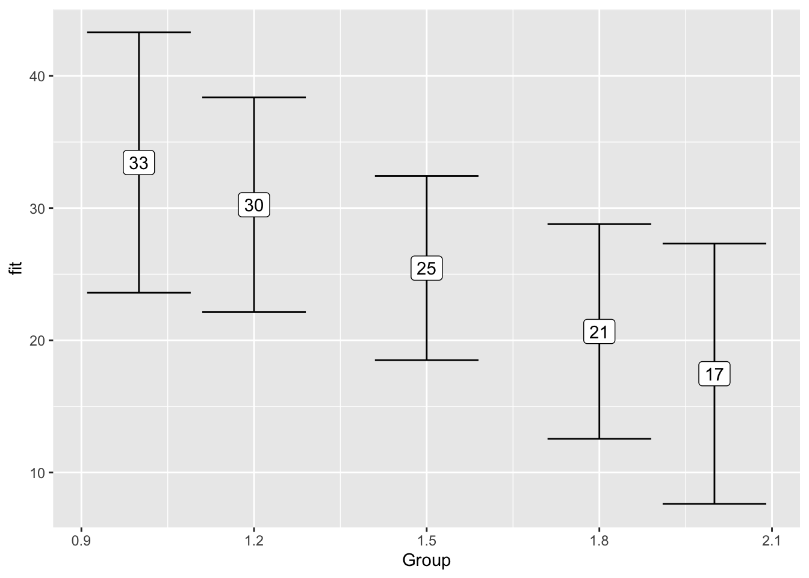
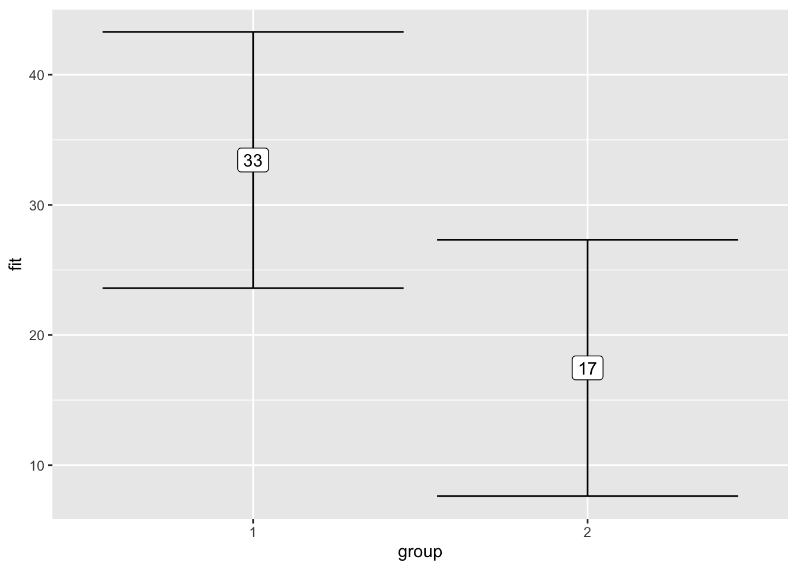
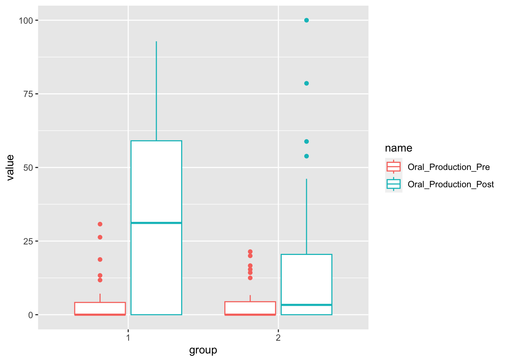

# load library for data analysis
library(tidyverse)September 1, 2023
Data
For this tutorial, we will be reproduction the data analysis at an Open Science repository. We are going to be using data from the [IRIS database](https://www.iris-database.org/details/8Inx1-lXnb6.
Here’s an excerpt of the study’s abstract:
This study investigated the effects of task complexity on child learners’ second language (L2) gains, the relationship between aptitude and L2 development, and the extent to which task complexity influences this relationship when recasts are provided. Sixty child EFL learners were assigned to two experimental groups. During the treatment, one group completed simple information transmission tasks, whereas the other group performed complex decision-making tasks. In response to errors in the use of the present third person singular verb forms, participants received recasts. L2 development was measured through oral production, written production, and elicited imitation tests. Aptitude was assessed through LLAMA D, LLAMA E, and LLAMA F.
Our first step it to load the tidyverse library (RStudio will prompt you to install it).
Download the data and add it to your project inside a folder called data.
Now we read the data in:
# read data in
child_l2_data <- read_csv("data/Data_Kourtali_Revesz.csv")It’s always a good idea to inspect the data to make sure everything looks good.
glimpse(child_l2_data)Rows: 60
Columns: 61
$ Participant <dbl> 1, 3, 11, 12, 15, 25, 26, 32, 40, 41, 43…
$ Time <dbl> 1, 1, 1, 1, 1, 1, 1, 1, 1, 1, 1, 1, 1, 1…
$ Group <dbl> 1, 1, 1, 1, 1, 1, 1, 1, 1, 1, 1, 1, 1, 1…
$ Duration_English <dbl> 6.0, 5.0, 4.0, 5.0, 4.0, 4.0, 6.0, 7.0, …
$ Listening <dbl> 6, 10, 5, 5, 3, 5, 7, 10, 6, 9, 10, 7, 9…
$ Oral_Production_Pre <dbl> 26.31, 18.75, 0.00, 0.00, 0.00, 0.00, 0.…
$ Written_Production_Pre <dbl> 0.00, 9.09, 0.00, 0.00, 0.00, 0.00, 8.33…
$ Oral_Production_Post <dbl> 26.66, 28.57, 0.00, 0.00, 0.00, 53.33, 3…
$ Written_Production_Post <dbl> 61.53, 75.00, 0.00, 58.33, 0.00, 100.00,…
$ EI <dbl> 29.16, 29.10, 0.00, 12.50, 0.00, 4.16, 4…
$ EI_GRAM <dbl> 41.66, 50.00, 0.00, 25.00, 0.00, 8.33, 8…
$ EI_UNGRAM <dbl> 16.66, 8.33, 0.00, 0.00, 0.00, 0.00, 0.0…
$ LLAMA_D <dbl> 45, 10, 20, 15, 30, 25, 25, 35, 35, 35, …
$ LLAMA_E <dbl> 50, 0, 0, 40, 60, 0, 40, 90, 10, 30, 70,…
$ LLAMA_F <dbl> 0, 40, 20, 10, 0, 40, 50, 10, 30, 20, 0,…
$ Recasts_T1 <dbl> 11, 10, 12, 16, 15, 3, 8, 9, 9, 12, 6, 9…
$ SU_T1_Number <dbl> 7, 8, 0, 0, 1, 1, 0, 7, 3, 3, 3, 1, 0, 6…
$ SU_T1_Percentage <dbl> 63.63, 80.00, 0.00, 0.00, 6.66, 33.33, 0…
$ OC_T1_OVERALL <dbl> 19, 15, 13, 22, 15, 13, 15, 25, 13, 12, …
$ OC_T1 <dbl> 18, 15, 13, 19, 15, 13, 15, 25, 13, 12, …
$ Recasts_T1_Percentage <dbl> 61.11, 66.66, 92.30, 84.21, 100.00, 23.0…
$ CP_T1_Number <dbl> 6, 5, 1, 0, 0, 10, 7, 16, 4, 0, 7, 5, 9,…
$ CP_T1_Percentage <dbl> 31.57, 33.33, 7.69, 0.00, 0.00, 76.92, 4…
$ Recasts_T2 <dbl> 4, 9, 12, 10, 15, 3, 4, 1, 7, 8, 0, 6, 0…
$ SU_T2_Number <dbl> 4, 6, 2, 0, 0, 0, 0, 1, 7, 0, 0, 0, 0, 3…
$ SU_T2_Percentage <dbl> 100.00, 66.66, 16.66, 0.00, 0.00, 0.00, …
$ OC_T2_OVERALL <dbl> 21, 14, 14, 19, 15, 14, 15, 22, 15, 14, …
$ OC_T2 <dbl> 20, 14, 14, 18, 15, 14, 15, 22, 15, 14, …
$ Recasts_T2_percentage <dbl> 20.00, 64.28, 85.71, 55.55, 100.00, 21.4…
$ CP_T2_Number <dbl> 15, 5, 2, 7, 0, 11, 11, 21, 8, 6, 13, 10…
$ CP_T2_Percentage <dbl> 71.42, 35.71, 14.28, 36.84, 0.00, 78.57,…
$ ME_1 <dbl> 2, 2, 5, 3, 2, 2, 1, 3, 6, 2, 3, 5, 5, 8…
$ ME_2 <dbl> 2, 2, 5, 3, 3, 3, 1, 2, 2, 2, 2, 2, 5, 8…
$ Overall_Dif_T1 <dbl> 1, 2, 5, 3, 6, 1, 1, 1, 4, 1, 3, 1, 5, 1…
$ Overall_Dif_T2 <dbl> 1, 2, 4, 2, 6, 3, 1, 2, 4, 1, 2, 1, 4, 1…
$ Ling_Dif_T1 <dbl> 1, 2, 6, 2, 3, 2, 1, 2, 4, 3, 2, 2, 4, 1…
$ Ling_Dif_T2 <dbl> 1, 2, 6, 3, 4, 2, 1, 2, 3, 3, 2, 1, 4, 1…
$ Perceiv_Perf_T1 <dbl> 2, 3, 5, 3, 8, 7, 1, 4, 5, 2, 3, 3, 5, 2…
$ Perceiv_Perf_T2 <dbl> 1, 3, 5, 3, 7, 6, 1, 3, 5, 3, 2, 2, 5, 1…
$ Recasts_Number_total <dbl> 15, 19, 24, 26, 30, 6, 12, 10, 16, 20, 6…
$ SU_Number_total <dbl> 11, 14, 2, 0, 1, 1, 0, 8, 10, 3, 3, 1, 0…
$ SU_Percentage_total <dbl> 73.33, 73.68, 8.33, 0.00, 3.33, 16.67, 0…
$ OC_TOTAL <dbl> 38, 29, 27, 37, 30, 27, 30, 47, 28, 26, …
$ Elicited_Imitation_Total_Pre <dbl> 7, 7, 0, 3, 0, 1, 1, 4, 3, 4, 11, 5, 3, …
$ Elicited_Imitation_Gr_Pre <dbl> 5, 6, 0, 3, 0, 1, 1, 3, 1, 3, 11, 5, 3, …
$ Elicited_Imitation_Ungr_Pre <dbl> 2, 1, 0, 0, 0, 0, 0, 1, 2, 1, 0, 0, 0, 5…
$ Elicited_Imitation_Total_Post <dbl> 5, 10, 0, 8, 1, 0, 3, 17, 9, 7, 11, 14, …
$ Elicited_Imitation_Gr_Post <dbl> 4, 10, 0, 6, 1, 0, 2, 9, 5, 7, 10, 10, 6…
$ Elicited_Imitation_Ungr_Post <dbl> 1, 0, 0, 2, 0, 0, 1, 8, 4, 0, 1, 4, 0, 1…
$ Gain_oral <dbl> 0.35, 9.82, 0.00, 0.00, 0.00, 53.33, 30.…
$ Gain_written <dbl> 61.53, 65.91, 0.00, 58.33, 0.00, 100.00,…
$ Gain_EI <dbl> -2, 3, 0, 5, 1, -1, 2, 13, 6, 3, 0, 9, 3…
$ Gain_EI_Gr <dbl> -1, 4, 0, 3, 1, -1, 1, 6, 4, 4, -1, 5, 3…
$ Gain_EI_Ungr <dbl> -1, -1, 0, 2, 0, 0, 1, 7, 2, -1, 1, 4, 0…
$ CP_both_tasks <dbl> 21, 10, 3, 7, 0, 21, 18, 37, 12, 6, 20, …
$ ZRE_1 <dbl> 2.94, 1.95, -0.53, -0.53, -0.53, -0.53, …
$ ZRE_2 <dbl> -0.24, -0.18, -1.17, -1.17, -1.17, 0.69,…
$ OralProPre_log <dbl> 3.27, 2.93, 0.00, 0.00, 0.00, 0.00, 0.00…
$ OralProPost_log <dbl> 3.28, 3.35, 0.00, 0.00, 0.00, 3.98, 3.43…
$ ZRE_3 <dbl> 2.22, 1.93, -0.58, -0.58, -0.58, -0.58, …
$ ZRE_4 <dbl> 0.42, 0.46, -1.39, -1.39, -1.39, 0.81, 0…Participants (page 187)
The final pool of participants included 26 females and 34 males
There should be 60 participants in the data.
The study employed a pretest–posttest design with two treatment sessions. Par- ticipants were assigned to one of two experimental groups through stratified random sampling, taking into account their pretest, proficiency, aptitude test results, and length of prior English study.
child_l2_data %>%
count(Group)| Group | n |
|---|---|
| 1 | 30 |
| 2 | 30 |
A series of independent-samples t-tests targeting the variables length of previous English study, and performance on the proficiency test confirmed that the two groups were comparable.
group_1_data <- child_l2_data %>%
filter(Group == 1)
group_2_data <- child_l2_data %>%
filter(Group == 2)English study,t=0.33,p=.75,d=0.08
t.test(group_1_data$Duration_English,
group_2_data$Duration_English)
Welch Two Sample t-test
data: group_1_data$Duration_English and group_2_data$Duration_English
t = 0.32672, df = 56.749, p-value = 0.7451
alternative hypothesis: true difference in means is not equal to 0
95 percent confidence interval:
-0.5129511 0.7129511
sample estimates:
mean of x mean of y
4.7 4.6 proficiency,t=0.07,p=.95,d=0.01
t.test(group_1_data$Listening,
group_2_data$Listening)
Welch Two Sample t-test
data: group_1_data$Listening and group_2_data$Listening
t = 0.061574, df = 57.922, p-value = 0.9511
alternative hypothesis: true difference in means is not equal to 0
95 percent confidence interval:
-1.050337 1.117004
sample estimates:
mean of x mean of y
5.833333 5.800000 T-test Effect Size using Cohen’s d Measure https://www.datanovia.com/en/lessons/t-test-effect-size-using-cohens-d-measure/
library(rstatix)
child_l2_data %>%
cohens_d(Duration_English ~ Group)| .y. | group1 | group2 | effsize | n1 | n2 | magnitude |
|---|---|---|---|---|---|---|
| Duration_English | 1 | 2 | 0.0843597 | 30 | 30 | negligible |
child_l2_data %>%
cohens_d(Listening ~ Group)| .y. | group1 | group2 | effsize | n1 | n2 | magnitude |
|---|---|---|---|---|---|---|
| Listening | 1 | 2 | 0.0158983 | 30 | 30 | negligible |
Statistical Analyses (page 196)
Table 1 Descriptive statistics for the perceived mental effort scale
The standard error is calculated by dividing the standard deviation by the sample size’s square root. The standard error is most useful as a means of calculating a confidence interval. For a large sample, a 95% confidence interval is obtained as the values 1.96×SE either side of the mean (https://www.ncbi.nlm.nih.gov/pmc/articles/PMC1255808).
child_l2_data %>%
group_by(Group) %>%
summarize(n = n(),
mean_ME_1 = mean(ME_1),
sd_ME_1 = sd(ME_1),
mean_ME_2 = mean(ME_2),
sd_ME_2 = sd(ME_2)) %>%
mutate(lower_ci_ME_1 = mean_ME_1 - qt(1 - (.05 / 2), n - 1) * sd_ME_1/sqrt(n),
upper_ci_ME_1 = mean_ME_1 + qt(1 - (.05 / 2), n - 1) * sd_ME_1/sqrt(n),
lower_ci_ME_2 = mean_ME_2 - qt(1 - (.05 / 2), n - 1) * sd_ME_2/sqrt(n),
upper_ci_ME_2 = mean_ME_2 + qt(1 - (.05 / 2), n - 1) * sd_ME_2/sqrt(n))| Group | n | mean_ME_1 | sd_ME_1 | mean_ME_2 | sd_ME_2 | lower_ci_ME_1 | upper_ci_ME_1 | lower_ci_ME_2 | upper_ci_ME_2 |
|---|---|---|---|---|---|---|---|---|---|
| 1 | 30 | 3.833333 | 1.743626 | 3.433333 | 1.715715 | 3.182253 | 4.484414 | 2.792675 | 4.073992 |
| 2 | 30 | 5.933333 | 1.910648 | 5.233333 | 2.358891 | 5.219886 | 6.646781 | 4.352509 | 6.114158 |
Table 4 Results for the linear regression models examining the effects of task complexity on the oral and written production tests
The way it is in the paper: group is a numeric variable
model_1 <- lm(ME_1 ~ Group, child_l2_data)
library(effects)
effect("Group", model_1) %>%
data.frame()| Group | fit | se | lower | upper |
|---|---|---|---|---|
| 1.0 | 3.833333 | 0.3339362 | 3.164887 | 4.501779 |
| 1.2 | 4.253333 | 0.2753709 | 3.702119 | 4.804548 |
| 1.5 | 4.883333 | 0.2361286 | 4.410671 | 5.355996 |
| 1.8 | 5.513333 | 0.2753709 | 4.962119 | 6.064548 |
| 2.0 | 5.933333 | 0.3339362 | 5.264887 | 6.601779 |
# linear regression (recreation of table 4 on page 200)
model_table_4 <- child_l2_data %>%
lm(formula = Oral_Production_Post ~ Oral_Production_Pre + Group)
summary(model_table_4)
Call:
lm(formula = Oral_Production_Post ~ Oral_Production_Pre + Group,
data = .)
Residuals:
Min 1Q Median 3Q Max
-41.942 -21.363 -4.573 21.869 66.482
Coefficients:
Estimate Std. Error t value Pr(>|t|)
(Intercept) 44.0133 11.1696 3.940 0.000224 ***
Oral_Production_Pre 1.3947 0.4662 2.991 0.004099 **
Group -15.9727 6.9541 -2.297 0.025320 *
---
Signif. codes: 0 '***' 0.001 '**' 0.01 '*' 0.05 '.' 0.1 ' ' 1
Residual standard error: 26.93 on 57 degrees of freedom
Multiple R-squared: 0.2022, Adjusted R-squared: 0.1742
F-statistic: 7.222 on 2 and 57 DF, p-value: 0.001601effect("Group", model_table_4) %>%
data.frame() %>%
ggplot(aes(x = Group,
y = fit,
ymin = lower,
ymax = upper)) +
geom_errorbar() +
geom_label(aes(label = format(fit, digits = 2)))
The correct way: group is a categorical (factor) variable
child_l2_data <- child_l2_data %>%
mutate(group = factor(Group))
model_1 <- lm(ME_1 ~ group, child_l2_data)
effect("group", model_1) %>%
data.frame()| group | fit | se | lower | upper |
|---|---|---|---|---|
| 1 | 3.833333 | 0.3339362 | 3.164887 | 4.501779 |
| 2 | 5.933333 | 0.3339362 | 5.264887 | 6.601779 |
model_table_4 <- child_l2_data %>%
lm(formula = Oral_Production_Post ~ Oral_Production_Pre + group)
summary(model_table_4)
Call:
lm(formula = Oral_Production_Post ~ Oral_Production_Pre + group,
data = .)
Residuals:
Min 1Q Median 3Q Max
-41.942 -21.363 -4.573 21.869 66.482
Coefficients:
Estimate Std. Error t value Pr(>|t|)
(Intercept) 28.0406 5.2577 5.333 1.72e-06 ***
Oral_Production_Pre 1.3947 0.4662 2.991 0.0041 **
group2 -15.9727 6.9541 -2.297 0.0253 *
---
Signif. codes: 0 '***' 0.001 '**' 0.01 '*' 0.05 '.' 0.1 ' ' 1
Residual standard error: 26.93 on 57 degrees of freedom
Multiple R-squared: 0.2022, Adjusted R-squared: 0.1742
F-statistic: 7.222 on 2 and 57 DF, p-value: 0.001601effect("group", model_table_4) %>%
data.frame() %>%
ggplot(aes(x = group,
y = fit,
ymin = lower,
ymax = upper)) +
geom_errorbar() +
geom_label(aes(label = format(fit, digits = 2)))
Data Visualization
You should always explore your data before running inferential statistics, based on your hypotheses. The inferential stats will confirm or refute your hypotheses.
Visualizations by Group
Oral production mean by group. We need to transform the data first, to have pre and post tests as values in a variable.
oral_production <- child_l2_data %>%
select(Participant, Group, Oral_Production_Pre, Oral_Production_Post) %>%
pivot_longer(cols = c(Oral_Production_Pre, Oral_Production_Post)) %>%
mutate(group = factor(Group),
name = factor(name,
levels = c("Oral_Production_Pre",
"Oral_Production_Post")))We can now create a boxplot by group and type of test.
oral_production %>%
ggplot(aes(x = group,
y = value,
color = name)) +
geom_boxplot()